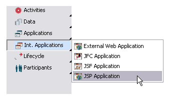
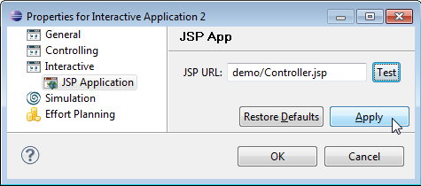

JavaServer Pages (JSPs), generate HTML dynamically on the server side. They are dynamic HTML pages accessing business logic via methods written in Java code embedded in these HTML pages. JSPs are preprocessed and compiled at first invocation and handled like servlets in subsequent requests. Servlets in turn are Java classes handling Http requests and generating Http responses.
JSPs can be integrated in Stardust in two different ways:
Integrating JSPs in Stardust means to give the process participant the possibility of accessing the Stardust Process engine using an http-based Web browser. Hence, integrating a JSP in the Stardust Workflow Execution Perspective provides a GUI device with high functionality.
The implementation of the Stardust Workflow Execution Perspective - and how your JSPs can be integrated - is described in the following sections. A short introduction to the Model-View-Controller concept underlying the Web user interface will start this description.
To create a JSP application in the Process Workbench select Items > Int. Applications > JSP Application in the diagrams toolbar palette.

Figure: Creating a JSP Application
Open the properties dialog of the application with a double-click on its
symbol. In the panel select Interactive > JSP Application
and fill in the URL of your JSP page. You can click the Test
button to check if the URL is correct.

Figure: Setting the Properties
If the JSP URL starts with "/", "http://" or "https://", then the current context root of your Web project will not be prefixed to the given URL. In all other cases, the context root will be prefixed to the given URL.
Data mappings for interactive activities work different than non-interactive ones. Please refer to the section Data Mappings for Interactive Application Activities of the chapter Workflow Data for a detailed description of how to work with data mappings for JSP applications.
JSP applications read "In Data" using Http Session in the following way:
session.getAttribute("<in-data-mapping-id>")
Similarly, "Out Data" can be set for JSP in Http Session:
session.setAttribute("<out-data-mapping-id>", <value>)
Date will be persisted when the activity is processed via Complete/SuspendAndSave.
Processing JSP applications work similar as Using External Web Applications, but without REST support.
Use the following URL to post the data:
<form action="/<context-path>/executor.jsp" method="get"> </form>
To process the activity, you need to forward control with appropriate 'key':
The shared session approach is a way to let an external JSP application interact with Stardust and the process data. This is no longer a recommended approach as several standard-compliant technology stacks are provided as outlined in the Process-based UI Mashups chapter.
The usage of a shared session includes leveraging of object names which might not be stable and introduces common class-loading issues. The external JSP application must not request any object which relates (either due to inheritance or member attribute) to classes from the JEE Stack (Servlets, JSF-classes etc.), otherwise CallNotFoundExceptions will occur if the libraries from the external JSP application differ from those bundled with the Stardust Portal. For example the usage of an external JSP application powered by RichFaces is not possible in shared-session mode as those JSF library classes will clash with those provided by the Stardust Portal.